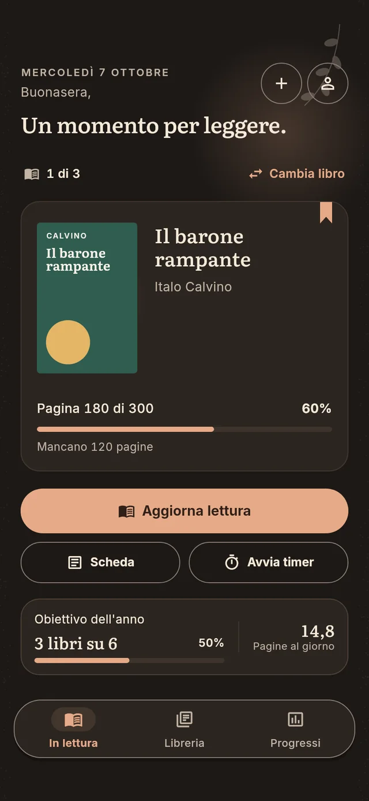
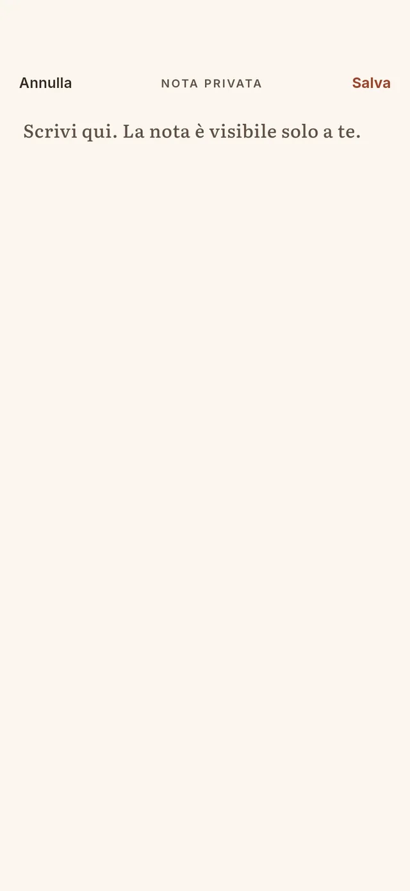
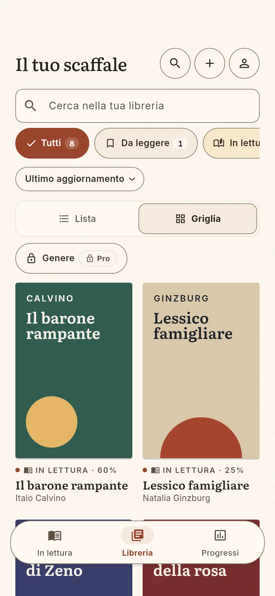

In lettura
Il libro attivo, sempre in primo piano.

Diario di lettura per iPhone
Libri, progressi, note e tempo di lettura. Tutto sull'iPhone, senza account.

Da vicino
Leggere
Avanzamento per pagine o percentuale. Il timer porta il tempo nelle statistiche.
Annotare
Note private, voto, date e riletture.
Organizzare
Lista o griglia, ricerca, filtri per stato.
Misurare
Obiettivo, generi, cronologia. Con Pro anche velocità, serie di giorni e data prevista di fine.






Funzioni
Il libro attivo, sempre in primo piano.
Obiettivo, generi, cronologia.
Oppure Google Books, Open Library, o a mano.
I dati restano sull'iPhone e nei backup. Il catalogo interroga Google Books e Open Library.
Informativa sulla privacyLista o griglia, con filtri per stato.
E inoltre
Lettavia Pro
Acquisto in-app · prezzo sull'App Store
Anteprima illustrativa. Terracotta è inclusa; Salvia e Miele fanno parte di Lettavia Pro.
L'app si scarica dall'App Store. Lettavia Pro è un acquisto in-app; il prezzo aggiornato è indicato sull'App Store.
Nessun account e nessun server di Lettavia: libreria, note e statistiche restano sul telefono e nei backup creati dall'utente.
Sì, da file CSV. Lettavia esporta a sua volta in CSV e crea backup completi in JSON o ZIP.
No, non c'è sincronizzazione cloud. Per spostare la libreria su un altro iPhone si usano i backup.